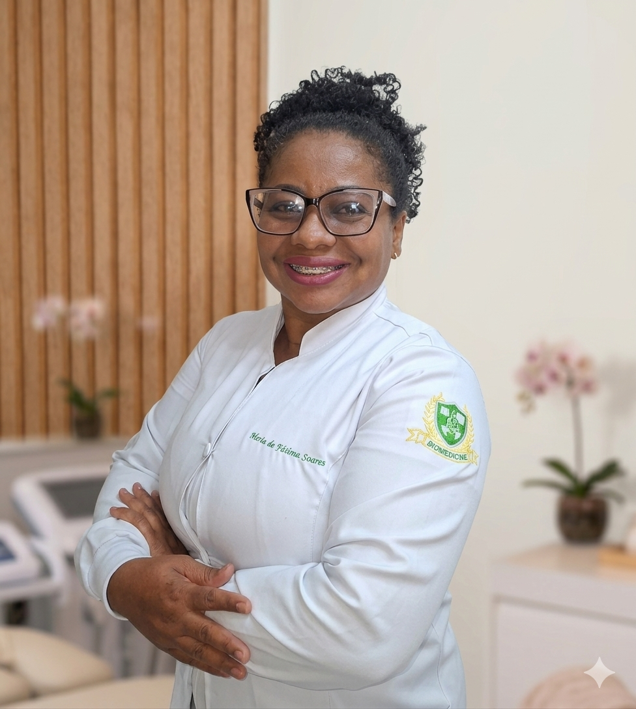
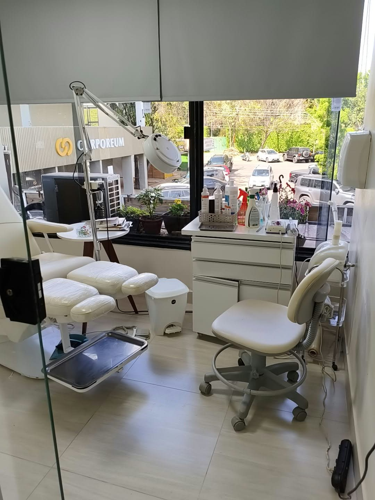
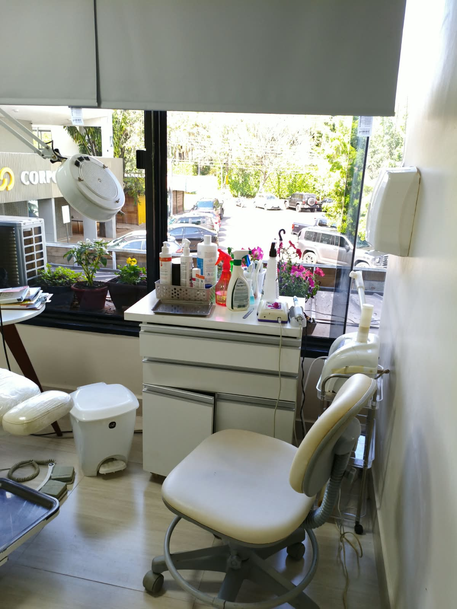

Olá, sou
FÁTIMA SOARES
BIOMEDICA E PODÓLOGA
16 anos de dedicação, experiência
e cuidado especializado.

SOBRE MIM
Podóloga desde 2010, sou dedicada à promoção da saúde, à prevenção e ao bem-estar dos pés.
Atendo pessoas de todas as idades, com atenção especial à Podogeriatria, oferecendo cuidados especializados aos pés da pessoa idosa.
Buscando sempre ampliar meus conhecimentos e oferecer um atendimento cada vez mais qualificado, também me formei em Biomedicina.
Minha missão é proporcionar um atendimento humanizado, individualizado e responsável.
Um pouco do meu trabalho pra vocês:
Procedimentos
Unha Encravada
Na maioria dos casos, nossos tratamentos são simples e indolores, utilizando técnicas não invasivas, como Laser/Led de baixa potência. Para situações mais complexas, indicamos médicos especializados.
Ortoplastia
A Ortoplastia, é uma técnica que consiste na confecção de órteses digitais de silicone. São elementos terapêuticos com grande eficácia quando se trata de reduzir as pressões plantares, evitando assim a progressão de possíveis lesões como calos, calosidades, joanetes e prevenção do aparecimento de úlceras em pacientes diabéticos. Estudos têm demonstrado que esses dispositivos ajudam a corrigir o alinhamento dos dedos, prevenir e curar a unhas encravadas em estágios menos avançados.
Helomas (calos)
Detentor de maioria das consultas na clínica, os helomas (calos) são provocados por atrito em pontos específicos dos pés, geralmente ocasionados por sapatos inadequados, práticas esportivas, alterações posturais entre outros fatores. Dispomos de técnicas que partem desde ações paliativas, quanto para resolução dos helomas.
Podogeriatria
Seus pés vão envelhecer junto com o resto do seu corpo. Conforme você envelhece, seus pés ficam mais suscetíveis a lesões e infecções. Problemas nos pés podem dificultar a sua mobilidade, por isso é importante manter os pés saudáveis.
Ortoníquia
A Ortoníquia, consiste na aplicação de pequenos aparelhos nas unhas, visando a melhora na curvatura dela. Esta curvatura que em muitos casos leva a dores, unhas encravadas constantes, formação de pele nas laterais dos dedos, podem ser solucionadas de modo simples com estes aparelhos.
Laser/Led
As mais avançadas terapias com o emprego do Laser/Led, estão disponibilizado ao pacientes da Essencial Podologia. Nela, tratamentos de micose nas unhas, unhas encravadas, lesões de pele mais sérias podem ser tratadas de forma a auxiliar na cicatrização, reduzir tempos de tratamentos entre outras vertentes.
Pé Diabético
O diabetes pode provocar sérios problemas nos pés, como má circulação, desequilíbrio, dormência, feridas e dificuldades de cicatrização. É crucial que os diabéticos realizem exames regulares com um médico para detectar e tratar ulcerações ou infecções, prevenindo complicações adicionais.
Onicomicose (Micose de Unha)
Estas infecções podem começar como uma mancha branca ou amarela sob a ponta da unha do pé. À medida que o fungo da unha se espalha mais profundamente na unha, sua unha pode descolorir, engrossar e desenvolver bordas em ruínas, causando um problema desagradável e potencialmente doloroso. Essas infecções devem ser tratadas o mais rápido possível. Se não forem tratados, podem levar a alterações estéticas nas unhas que podem influir em desconforto em locais públicos entre outras situações.
Podopediatria
Como os pés jovens ainda estão crescendo, os problemas podem se desenvolver rapidamente. É importante pegar quaisquer condições antes que elas continuem na idade adulta. Preste atenção ao seguinte, pois eles podem indicar possíveis problemas nos pés que o seu filho está sentindo: uma mudança no desgaste dos sapatos, descoloração da pele ou unhas, inchaços na pele, uma mudança na coordenação geral e resistência do seu filho, queda e cansaço e / ou se eles se tornam pouco dispostos a participar de atividades que normalmente gostam.
Podologia Esportiva
Os problemas mais comuns nos pés causados por atividades relacionadas a esportes são bolhas, calos, celulite, pé de atleta, tendinite de Aquiles e dor no calcanhar. Medidas preventivas incluem o uso de higiene adequada dos pés: manter os pés secos, usar meias limpas, garantir que seus sapatos caibam adequadamente e garantir que você não sobrecarregue suas pernas, tornozelos e pés. Se você desenvolver dores recorrentes e/ou agravantes, deve marcar uma consulta o mais rápido possível para evitar danos permanentes.
Conheça nosso espaço

